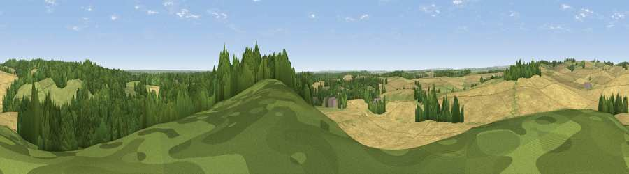

Viewpoint near Cranborne
#29638 in England · top 36% of its area beats it · near Cranborne · access?Where it is
The exact computed spot (SU 05825 14275). Click the marker for map links.
Public access: no public right of way or access land is recorded at this exact spot — it may be on private land. Computed from Natural England's CRoW access layer and OpenStreetMap rights of way — not the legal definitive map. Always verify locally.
The view, rendered

A 360° render of this exact spot computed from the terrain model, tree cover and land cover — summer colours, afternoon light, calibrated against photographs of famous viewpoints. Real trees, hedges and buildings will differ in detail.
The panorama
Grey silhouette: terrain skyline in each direction (720 bearings, Earth curvature and refraction included). Dashed green: skyline with trees (+15 m) and buildings (+8 m) as obstacles. Blue strip: how far the ground is visible on each bearing.
Where the view opens
Wedge length = distance to the farthest visible ground on that bearing (vegetation-aware). Rings at 10, 25 and 50 km.
What fills the view
52% cropland · 30% woodland · 17% grassland ·
Angular shares of the visible panorama (visual magnitude), not map area. Landscape diversity 0.45 (0–1 Shannon).
Key numbers
More beautiful places nearby
The staircase of upgrades: each row has a higher view potential than everything closer. Driving times are estimates from straight-line distance, calibrated against real road routing — check an actual route before setting out.
| Place | Direction | Drive | Score |
|---|---|---|---|
| Viewpoint near Cranborne | WNW · 1 km | ~3 min | 44.6 |
| Viewpoint near Cranborne | NW · 3 km | ~8 min | 65.0 |
| Trow Down | NW · 11 km | ~22 min | 67.5 |
| Monk's Down | WNW · 14 km | ~26 min | 74.4 |
| Viewpoint near Berwick St John | WNW · 15 km | ~26 min | 78.2 |
| Viewpoint near Studland | S · 33 km | ~51 min | 80.9 |
| Viewpoint near Studland | S · 33 km | ~51 min | 82.2 |
| Ballard Down | S · 33 km | ~51 min | 83.2 |
50.92790, -1.91849 · source: screening · position refined by local search. Computed location — check access rights before visiting.